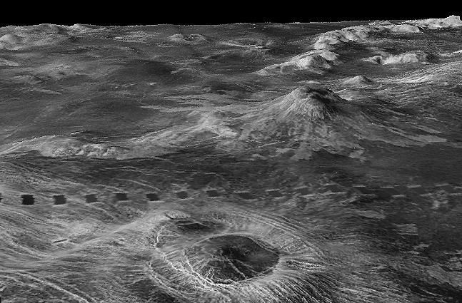
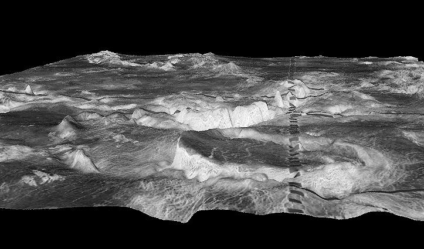

FIELD RESEARCH
Continue exploring the surface scans collected by previous missions.



VENUS TIME TRAVEL ARCHIVE
Your mission is to travel through Venus' past and discover how Earth's twin transformed into the hottest planet in our solar system.
You will travel through three moments in Venus' history. Each archive contains scientific evidence. Watch every mission log completely and collect the research before your return window closes.
0 / 3 Data Logs Collected
Scientists believe Venus may once have contained oceans and a much cooler climate.
The atmosphere begins to trap enormous amounts of heat. A runaway greenhouse effect transforms Venus into an increasingly hostile environment.
Venus is now one of the most extreme planets in the Solar System, with crushing atmospheric pressure, sulfuric acid clouds, and temperatures too hot for liquid water to exist on the surface.
Continue exploring the surface scans collected by previous missions.


Mission data has been collected. Return to Earth before the time portal closes.